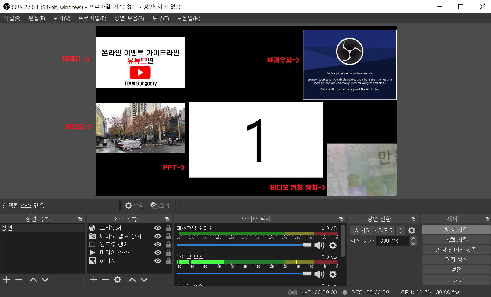
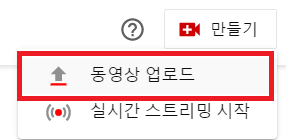

시작하기
스트리밍 시작 및 종료
스트리밍 시작
이제 모든 미디어 준비를 마치면 방송시작을 할 수 있습니다. 프로그램을 사용하면 youtube에서 스트리밍을 눌러줄 필요가 없습니다. 오른쪽 아래에 있는 방송 시작버튼을 눌러주면 스트리밍을 시작 할 수 있습니다.

스트리밍 종료
방송 시작 때 눌렀던 오른쪽 아래에 있는 탭을 보면 방송 시작이 방송 중단으로 바뀐 것을 볼 수 있습니다. 방송 중단버튼을 눌러주면 스트리밍을 종료 할 수 있습니다.
녹화 영상 업로드
방송 중단을 누르면 자동 녹화가 됩니다. 자신이 처음에 설정한 녹화영상 위치로 가면 저장되어 있는 것을 볼 수 있습니다.
Youtube 페이지로 다시 돌아가 프로필 옆에 있는 만들기 버튼을 눌러 동영상 업로드를 눌러 녹화된 동영상을 업로드합니다. 